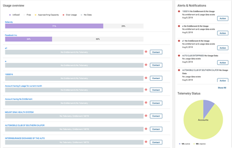
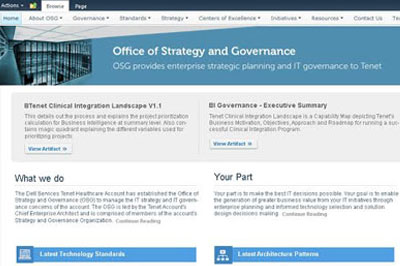
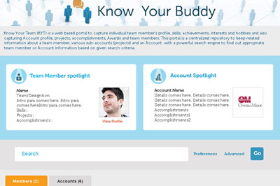

Veritas Smart Meter
Veritas Smart Meter is a safe, secure web service that works with Veritas NetBackup 8.1.2 and later. Veritas Smart Meter provides capacity planning and budgeting with accurate real-time reporting, revealing total amount of data that is backed up. User can identify growth spikes or potential gaps in coverage and view usage trend charts. This tool assesses consumption to alert user before licensed capacity is exceeded.UI design & development



